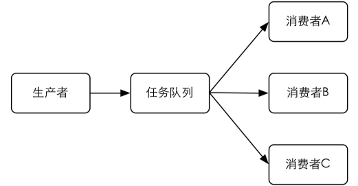

4.4 消息通知
凭着小白的用心经营，博客的访问量逐渐增多，甚至有了小白自己的粉丝。这不，小白刚收到一封来自粉丝的邮件，在邮件中那个粉丝强烈建议小白给博客加入邮件订阅功能，这样当小白发布新文章后订阅小白博客的用户就可以收到通知邮件了。在信的末尾，那个粉丝还着重强调了一下：“这个功能对不习惯使用RSS的用户很重要，希望能够加上！”
看过信后，小白心想：“是个好建议！不过话说回来，似乎他还没发现其实我的博客连RSS功能都没有。”
邮件订阅功能太好实现了，无非是在博客首页放一个文本框供访客输入自己的邮箱地址，提交后博客会将该地址存入 Redis 的一个集合类型键中（使用集合类型是为了保证同一邮箱地址不会存储多个）。每当发布新文章时，就向收集到的邮箱地址发送通知邮件。
想的简单，可是做出来后小白却发现了一个问题：输入邮箱地址提交后，页面需要很久时间才能载入完。
原来小白为了确保用户没有输入他人的邮箱，在提交之后程序会向用户输入的邮箱发送一封包含确认链接的邮件，只有用户单击这个链接后对应的邮箱地址才会被程序记录。可是由于发送邮件需要连接到一个远程的邮件发送服务器，网络好的情况下也得花上2秒左右的时间，赶上网络不好10秒都未必能发完。所以每次用户提交邮箱后页面都要等待程序发送完邮件才能加载出来，而加载出来的页面上显示的内容只是提示用户查看自己的邮箱单击确认链接。“完全可以等页面加载出来后再发送邮件，这样用户就不需要等了。”小白喃喃道。
按照惯例，有问题问宋老师，小白给宋老师发了一封邮件，不久就收到了答复。
小白的问题在网站开发中十分常见，当页面需要进行如发送邮件、复杂数据运算等耗时较长的操作时会阻塞页面的渲染。为了避免用户等待太久，应该使用独立的线程来完成这类操作。不过一些编程语言或框架不易实现多线程，这时很容易就会想到通过其他进程来实现。就小白的例子来说，设想有一个进程能够完成发邮件的功能，那么在页面中只需要想办法通知这个进程向指定的地址发送邮件就可以了。
通知的过程可以借助任务队列来实现。任务队列顾名思义，就是“传递任务的队列”。与任务队列进行交互的实体有两类，一类是生产者（producer），另一类是消费者（consumer）。生产者会将需要处理的任务放入任务队列中，而消费者则不断地从任务队列中读入任务信息并执行。
对于发邮件这个操作来说页面程序就是生产者，而发邮件的进程就是消费者。当需要发送邮件时，页面程序会将收件地址、邮件主题和邮件正文组装成一个任务后存入任务队列中。同时发邮件的进程会不断检查任务队列，一旦发现有新的任务便会将其从队列中取出并执行。由此实现了进程间的通信。
使用任务队列有如下好处。
1．松耦合
生产者和消费者无需知道彼此的实现细节，只需要约定好任务的描述格式。这使得生产者和消费者可以由不同的团队使用不同的编程语言编写。
2．易于扩展
消费者可以有多个，而且可以分布在不同的服务器中，如图4-1所示。借此可以轻易地降低单台服务器的负载。

图4-1 可以有多个消费者分配任务队列中的任务
说到队列很自然就能想到Redis的列表类型，3.4.2节介绍了使用LPUSH和RPOP命令实现队列的概念。如果要实现任务队列，只需要让生产者将任务使用LPUSH命令加入到某个键中，另一边让消费者不断地使用RPOP命令从该键中取出任务即可。
在小白的例子中，完成发邮件的任务需要知道收件地址、邮件主题和邮件正文。所以生产者需要将这3个信息组成对象并序列化成字符串，然后将其加入到任务队列中。而消费者则循环从队列中拉取任务，就像如下伪代码：
# 无限循环读取任务队列中的内容
loop
$task = RPOR queue
if $task
# 如果任务队列中有任务则执行它
execute($task)
else
# 如果没有则等待 1 秒以免过于频繁地请求数据
wait 1 second
到此一个使用 Redis 实现的简单的任务队列就写好了。不过还有一点不完美的地方：当任务队列中没有任务时消费者每秒都会调用一次 RPOP 命令查看是否有新任务。如果可以实现一旦有新任务加入任务队列就通知消费者就好了。其实借助 BRPOP 命令就可以实现这样的需求。
BRPOP命令和RPOP命令相似，唯一的区别是当列表中没有元素时BRPOP命令会一直阻塞住连接，直到有新元素加入。如上段代码可改写为：
loop
# 如果任务队列中没有新任务，BRPOP 命令会一直阻塞，不会执行 execute()。
$task = BRPOP queue, 0
# 返回值是一个数组（见下介绍），数组第二个元素是我们需要的任务。
execute($task[1])
BRPOP命令接收两个参数，第一个是键名，第二个是超时时间，单位是秒。当超过了此时间仍然没有获得新元素的话就会返回 nil。上例中超时时间为"0"，表示不限制等待的时间，即如果没有新元素加入列表就会永远阻塞下去。
当获得一个元素后 BRPOP 命令返回两个值，分别是键名和元素值。为了测试 BRPOP命令，我们可以打开两个redis-cli实例，在实例A中：
redis A> BRPOP queue 0
键入回车后实例1会处于阻塞状态，这时在实例B中向queue中加入一个元素：
redis B> LPUSH queue task
(integer) 1
在LPUSH命令执行后实例A马上就返回了结果：
1) "queue"
2) "task"
同时会发现queue中的元素已经被取走：
redis> LLEN queue
(integer) 0
除了 BRPOP命令外，Redis 还提供了 BLPOP，和 BRPOP的区别在与从队列取元素时BLPOP会从队列左边取。具体可以参照LPOP理解，这里不再赘述。
前面说到了小白博客需要在发布文章的时候向每个订阅者发送邮件，这一步骤同样可以使用任务队列实现。由于要执行的任务和发送确认邮件一样，所以二者可以共用一个消费者。然而设想这样的情况：假设订阅小白博客的用户有1000人，那么当发布一篇新文章后博客就会向任务队列中添加1000个发送通知邮件的任务。如果每发一封邮件需要10秒，全部完成这1000个任务就需要近3个小时。问题来了，假如这期间有新的用户想要订阅小白博客，当他提交完自己的邮箱并看到网页提示他查收确认邮件时，他并不知道向自己发送确认邮件的任务被加入到了已经有1000个任务的队列中。要收到确认邮件，他不得不等待近3个小时。多么糟糕的用户体验！而另一方面发布新文章后通知订阅用户的任务并不是很紧急，大多数用户并不要求有新文章后马上就能收到通知邮件，甚至延迟一天的时间在很多情况下也是可以接受的。
所以可以得出结论当发送确认邮件和发送通知邮件两种任务同时存在时，应该优先执行前者。为了实现这一目的，我们需要实现一个优先级队列。
BRPOP 命令可以同时接收多个键，其完整的命令格式为 BLPOP key [key …] timeout，如 BLPOP queue:1 queue:2 0。意义是同时检测多个键，如果所有键都没有元素则阻塞，如果其中有一个键有元素则会从该键中弹出元素。例如打开两个 redis-cli 实例，在实例A中：
redis A> BLPOP queue:1 queue:2 queue:3 0
在实例B中：
redis B> LPUSH queue:2 task
(integer) 1
则实例A中会返回：
1) "queue:2"
2) "task"
如果多个键都有元素则按照从左到右的顺序取第一个键中的一个元素。我们先在queue:2和queue:3中各加入一个元素：
redis> LPUSH queue:2 task1
1) (integer) 1
redis> LPUSH queue:3 task2
2) (integer) 1
然后执行BRPOP命令：
redis> BRPOP queue:1 queue:2 queue:3 0
1) "queue:2"
2) "task1"
借此特性可以实现区分优先级的任务队列。我们分别使用 queue:confirmation. email和queue:notification.email两个键存储发送确认邮件和发送通知邮件两种任务，然后将消费者的代码改为：
loop
$task =
BRPOP queue:confirmation.email,
queue:notification.email,
0
execute($task[1])
这时一旦发送确认邮件的任务被加入到 queue:confirmation.email 队列中，无论queue: notification.email还有多少任务，消费者都会优先完成发送确认邮件的任务。
除了实现任务队列外，Redis 还提供了一组命令可以让开发者实现“发布/订阅”（publish/subscribe）模式。“发布/订阅”模式同样可以实现进程间的消息传递，其原理是这样的：
“发布/订阅”模式中包含两种角色，分别是发布者和订阅者。订阅者可以订阅一个或若干个频道（channel），而发布者可以向指定的频道发送消息，所有订阅此频道的订阅者都会收到此消息。
发布者发布消息的命令是 PUBLISH，用法是 PUBLISH channel message，如向channel.1说一声“hi”：
redis> PUBLISH channel.1 hi
(integer) 0
这样消息就发出去了。PUBLISH 命令的返回值表示接收到这条消息的订阅者数量。因为此时没有客户端订阅channel.1，所以返回0。发出去的消息不会被持久化，也就是说当有客户端订阅channel.1后只能收到后续发布到该频道的消息，之前发送的就收不到了。
订阅频道的命令是 SUBSCRIBE，可以同时订阅多个频道，用法是 SUBSCRIBE channel [channel …]。现在新开一个redis-cli 实例 A，用它来订阅 channel.1：
redis A> SUBSCRIBE channel.1
Reading messages... (press Ctrl-C to quit)
1) "subscribe"
2) "channel.1"
3) (integer) 1
执行 SUBSCRIBE 命令后客户端会进入订阅状态，处于此状态下客户端不能使用除SUBSCRIBE、UNSUBSCRIBE、PSUBSCRIBE和PUNSUBSCRIBE这4个属于“发布/订阅”模式的命令之外的命令（后面3个命令会在下面介绍），否则会报错。
进入订阅状态后客户端可能收到3种类型的回复。每种类型的回复都包含 3 个值，第一个值是消息的类型，根据消息类型的不同，第二、三个值的含义也不同。消息类型可能的取值有以下3个。
（1）subscribe。表示订阅成功的反馈信息。第二个值是订阅成功的频道名称，第三个值是当前客户端订阅的频道数量。
（2）message。这个类型的回复是我们最关心的，它表示接收到的消息。第二个值表示产生消息的频道名称，第三个值是消息的内容。
（3）unsubscribe。表示成功取消订阅某个频道。第二个值是对应的频道名称，第三个值是当前客户端订阅的频道数量，当此值为0时客户端会退出订阅状态，之后就可以执行其他非“发布/订阅”模式的命令了。
上例中当实例A订阅了channel.1进入订阅状态后收到了一条subscribe类型的回复，这时我们打开另一个redis-cli实例B，并向channel.1发送一条消息：
redis B> PUBLISH channel.1 hi!
(integer) 1
返回值为1表示有一个客户端订阅了channel.1，此时实例A收到了类型为message的回复：
1) "message"
2) "channel.1"
3) "hi!"
使用 UNSUBSCRIBE 命令可以取消订阅指定的频道，用法为 UNSUBSCRIBE [channel [channel …]]，如果不指定频道则会取消订阅所有频道[5] 。
除了可以使用SUBSCRIBE命令订阅指定名称的频道外，还可以使用PSUBSCRIBE命令订阅指定的规则。规则支持glob风格通配符格式（见3.1节），下面我们新打开一个redis-cli实例C进行演示：
redis C> PSUBSCRIBE channel.?*
Reading messages... (press Ctrl-C to quit)
1) "psubscribe"
2) "channel.?*"
3) (integer) 1
规则channel.?*可以匹配channel.1和channel.10，但不会匹配channel.。这时在实例B中发布消息：
redis B> PUBLISH channel.1 hi!
(integer) 2
返回结果为2是因为实例A和实例C两个客户端都订阅了channel.1频道。实例C接收到的回复是：
1) "pmessage"
2) "channel.?*"
3) "channel.1"
4) "hi!"
第一个值表示这条消息是通过PSUBSCRIBE命令订阅频道而收到的，第二个值表示订阅时使用的通配符，第三个值表示实际收到消息的频道命令，第四个值则是消息内容。
提示 使用PSUBSCRIBE命令可以重复订阅一个频道，如某客户端执行了PSUBSCRIBE channel.? channel.?*，这时向 channel.2 发布消息后该客户端会收到两条消息，而同时PUBLISH命令返回的值也是2而不是1。同样的，如果有另一个客户端执行了 SUBSCRIBE channel.10和PSUBSCRIBE channel.?*的话，向channel.10发送命令该客户端也会收到两条消息（但是是两种类型：message和pmessage），同时PUBLISH命令会返回2。
PUNSUBSCRIBE 命令可以退订指定的规则，用法是 PUNSUBSCRIBE [pattern [pattern …]]，如果没有参数则会退订所有规则。
注意 使用PUNSUBSCRIBE命令只能退订通过 PSUBSCRIBE命令订阅的规则，不会影响直接通过 SUBSCRIBE 命令订阅的频道；同样 UNSUBSCRIBE 命令也不会影响通过PSUBSCRIBE命令订阅的规则。另外容易出错的一点是使用PUNSUBSCRIBE命令退订某个规则时不会将其中的通配符展开，而是进行严格的字符串匹配，所以PUNSUBSCRIBE *无法退订 channel.*规则，而是必须使用 PUNSUBSCRIBE channel.*才能退订。